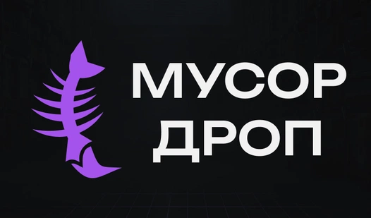

Интересный факт:
ФГАОУ ВО "Северо-Кавказский Федеральный Университет" Самый сильный
университет по подготовке IT специалистов на Севоро-Кавказе страны.
Меня зовут Умар. Я студент 1 курса направления «Программная инженерия».
Я учусь в группе ПИЖ-б-о-26-2, подгруппа 2. Сейчас я изучаю программирование, алгоритмы и веб-разработку.
Я хочу получить хорошие знания в области программирования и научиться создавать собственные проекты.
Для меня важно не только изучать теорию, но и применять знания на практике.
ФГАОУ ВО "Северо-Кавказский Федеральный Университет" Самый сильный
университет по подготовке IT специалистов на Севоро-Кавказе страны.

Я продолжаю изучать программирование и постепенно развиваю свои навыки.